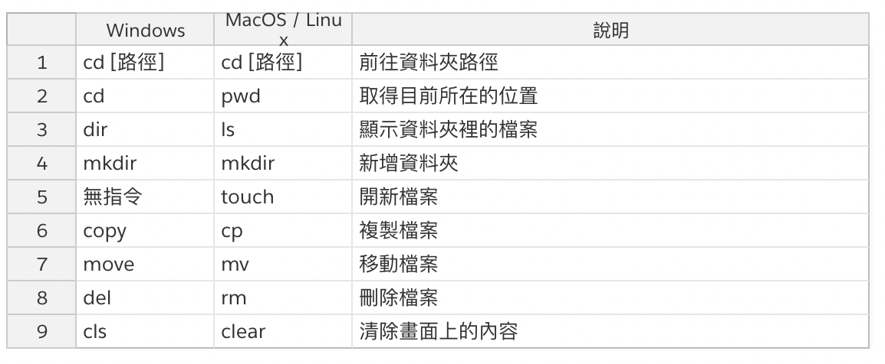

什麼是 Git 呢？
為什麼要學 Git ？
- Git 是程式碼版本控制軟體
- 用網頁版型介紹 Git 的差異
Git 與 Github 是什麼？ 差在哪呢？
Git 是一個分散式版本控制軟體，可藉由它產生一個*儲存庫( git Repository)*。
Github：支援 git 程式碼存取和遠端托管儲存庫的平台服務
關係像是本地端有一個 index.html，但可以放到 dropbox、Google Drive 進行雲端託管
熱門遠端儲存庫(Github VS Bitbucket VS Gitlab)
GitHub：擁有 GitHub Pages 功能，可擁有私人數據庫，免費方案是 3 人以下
Bitbucket：可擁有私人數據庫，免費方案是五人以下團隊
GitLab：自架 Git 伺服器，有提供 web 視覺化管理介面，常用於企業內部開發
懶人包解釋：
- 公司專案的小型團隊可用 Bitbucket
- 想要有一個公開對外網站的話，可用 GitHub
我們可以在終端機上透過 git 指令來控制程式碼，也可以用圖形化介面的GuI來管理程式碼（SourceTree）。
軟體與服務安裝
在學習版控前，可以將以下軟體進行安裝與註冊。
- Git 軟體安裝 - 首頁 Download
- Github 會員註冊
- SourceTree 軟體安裝
為什麼總是在git或是gitHub上使用得不順利呢？
主要是因為我們不太熟悉指令，因為在使用上，有時還是需要透過指令，才能在操作時更加順利。
以下為常見的bash指令

嘗試 Git 是否有安裝成功
在終端機裡面輸入：git --version
個人電腦環境設定
設定個人資料
- 輸入姓名：
git config --global user.name "mike" - 輸入個人的 email：
git config --global user.email "q2336xxx@gmail.com" - 查詢 git 設定內容：
git config --list
基本指令架構

Git 常用指令
- 初始化數據庫：
git init - 開啟 .git 隱藏檔方案
- Mac
- command+shift+.
- Mac
- 查詢當前狀態：
git status- 要將檔案加入到指定資料夾
- 將檔案加入到索引：
git add . - 將索引檔案變成一個更新(commit)：
git commit -m "新增網頁環境" - 觀察 commit 歷史紀錄：
git log - 下載遠端數據庫：
git clone 數據庫網址 - 更新遠端數據庫：
git push origin master
GitHub 基本上傳步驟
在本地端建立資料夾
自資料夾上先建立初始化數據庫：
git init將檔案加入到索引
git add .將索引檔案變成一個更新(commit)：
git commit -m "新增網頁環境"在gitHub 上建立一個遠端數據庫 new repositories
選擇第二點，因為我們已經在本地端建立好數據庫了，因此，將遠端數據庫的連結跟本地端做連結。
git remote add origin git@github.com:/Github.git回到 gitHub 上，去 setting 裡，開啟 gitHub Pages 頁面。